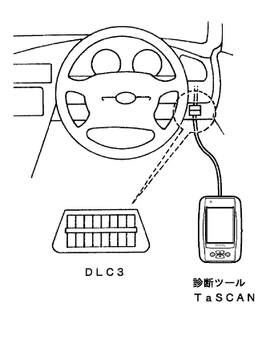
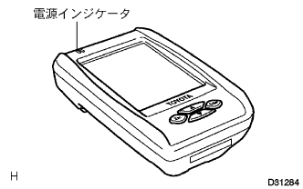

ECU制御システムのトラブルシューティングの方法 新ダイアグシステム |
|
新ダイアグシステムとは、高度化·複雑化するTCCS、BEAN等車載エレクトロニクスシステムに対応した新しい故障診断システムである。この故障診断システムの機能は、診断ツールTaSCANにより活用できる。
この新ダイアグに対応した診断ツールTaSCANには、下表に示す機能がある。
| 機能 | 概要 |
| 基本点検 | エンジン、ECTの基本点検が可能(エンジン、ECTのみ) |
| トラブルシュート |
|
| ECUデータモニター | ECUデータの確認、記録、再生が可能 |
| アクティブテスト | アクチュエーターの任意駆動が可能 |
| カスタマイズ | イルミネーテッドエントリーシステムのタイマー時間の変更等、ユーザーの要望にあわせた設定が可能 |
| 汎用計測 | デジタルテスター(電圧、抵抗、パルス)およびオシロスコープ機能を搭載 |
| A | B | C | |
| ダイアグノーシスコード読み取り (ノーマルモード) | ○ | ○ | ○ |
| ダイアグノーシスコード読み取り (チェックモード) | ○ | ○ (＊1) | - |
| フリーズフレームデータ (故障発生時のコンピューターデータ)読み取り | ○ | ○ (＊2) | - |
| コンピュータデータのリアルタイム 読み取りおよび保存/表示 | ○ | ○ | - |
| アクティブテスト | ○ | ○ | - |
|  |
車両との接続
運転席足元付近に設置のDLC3 (データリンクコネクターNo.3)に接続する。
診断ツールTaSCANの操作
診断ツールTaSCANの電源スイッチをONにすると、メニュー画面が表示されるので、実施したい項目を任意に選択し、それ以降画面と対話をしながら作業を進める。
新ダイアグシステム採用に伴いDLC3 (運転席インパネ下部に設置)に機能を集約しました。
DLC3の端子名称と機能
| 端子名称 | 機能 |
| BAT | バッテリー電源 |
| WFSE | ECUプログラム書き換え |
| TC | ダイアグコード(ランプ)出力指示 |
| TS | テストモード出力指示 |
| TAC | エンジン回転数出力 |
| SIL | 各コンピューターとの新ダイアグ通信 |
| CG | ボデーアース |
|  |
TaSCANの電源インジケーター不灯
他の車両にTaSCANを接続し、TaSCANを起動する。
| 作動状態 | 不具合箇所 | 点検箇所 |
| TaSCANの電源インジケーターが点灯する場合 | 車両側 |
|
| TaSCANの電源インジケーターが点灯しない場合 | TaSCAN本体 | - |
メインメニュー表示時に新ダイアグ対応の全てのECU名を表示しない。
IGスイッチおよびTaSCANの電源スイッチを一度OFFし、再度TaSCANを起動し[戻り]キーを押してメインメニュー表示させた時、すべてのECU名を表示しない場合は、他の車両にTaSCANを接続しメインメニューを表示させる。
| 作動状態 | 不具合箇所 | 点検箇所 |
| 全てのECU名を表示しない | TaSCAN本体 | - |
| TaSCANが正常に作動する場合 | 車両側 |
|
IGスイッチおよびTaSCANの電源スイッチを一度OFFし、再度TaSCANを起動し[戻り]キーを押してメインメニュー表示させた時、一部のECU名を表示しない場合。
| 作動状態 | 不具合箇所 | 点検箇所 |
| 一部のECU名を表示しない | 車両側 |
|